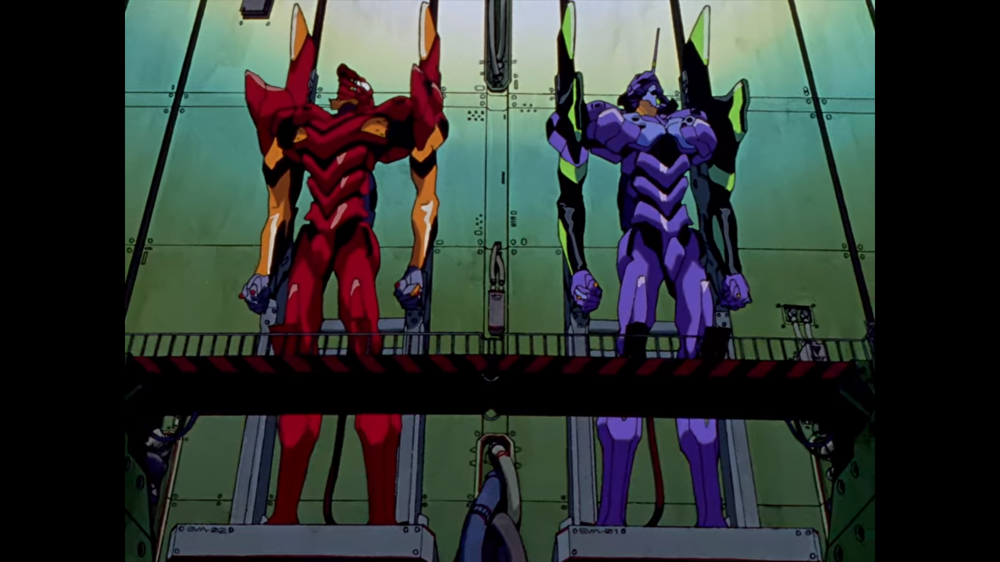
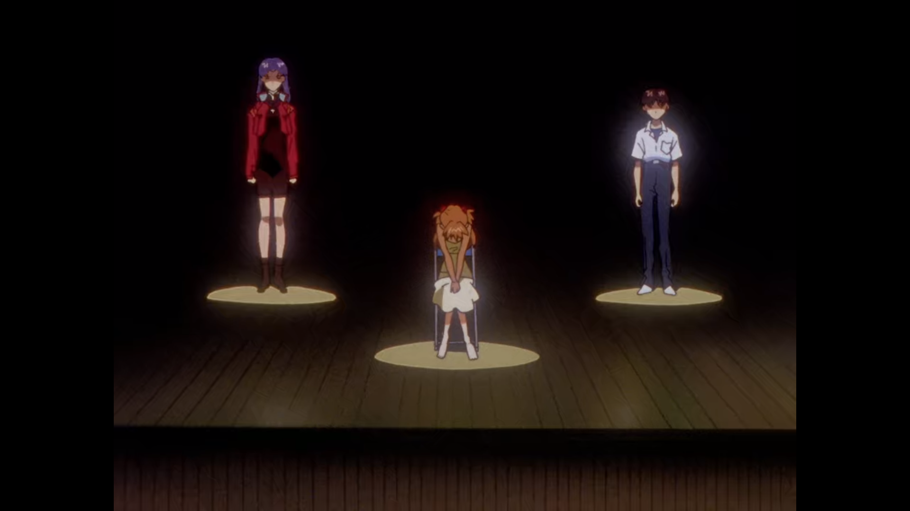
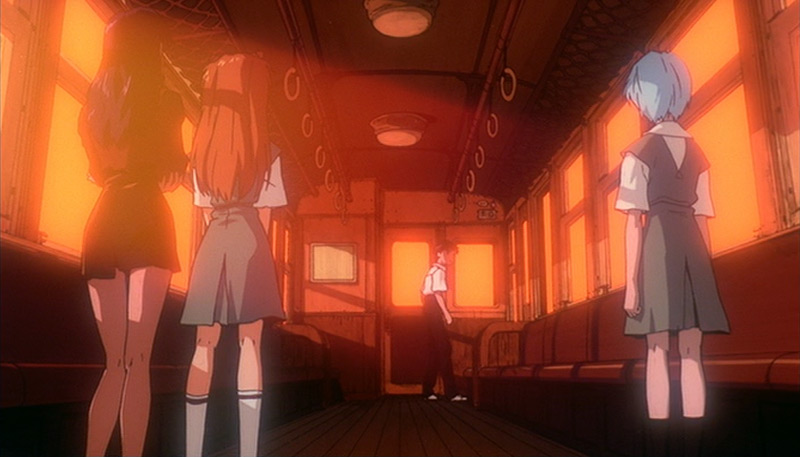
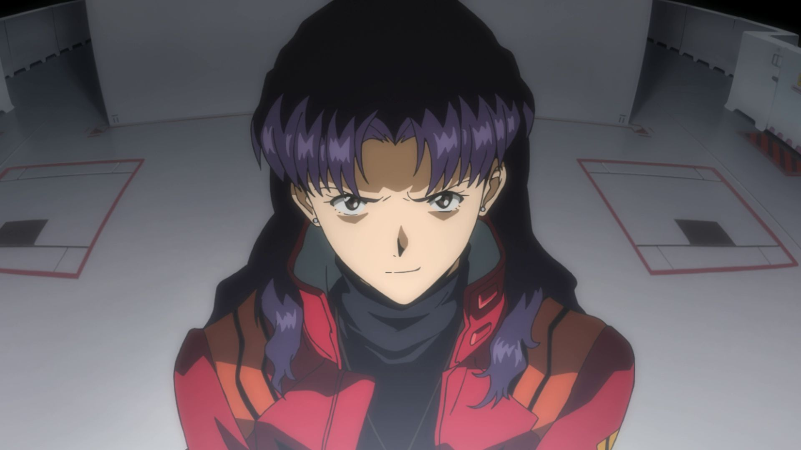

1. Neon Genesis Evangelion (1995)
- - Contains 26 episodes
- - That's the original serie
Q) What about the Director's Cut?
A) The
Director's Cut consists of extended versions of Episodes 21 to 24. The extended
versions feature scenes from the
Evangelion: Death recap. Those extra scenes ended up making
several remasters, including the
Platinum Edition remaster in 2001
The Platinum Edition is the North American release of
Renewal of Evangelion. It's best to not worry about quality, as most online services will have the
Director's Cut.

2. ENDING 1: TV Ending (1995)
- - Episodes 25-26 of the NGE Series.
- - Does not contain any extra scenes.
This ending is intended as a "philosophical" ending. It does not use a lot of visuals, you'll not
see big mechas fights, and there is a lot of reused footage in it. It's still an ending, it just focuses on characters
development.
In response to fan's reactions, Hideaki Anno and his team created the "movie"
The End of Evangelion,
which is another ending for the original series.

2. ENDING 2: The End of Evangelion (1997)
- - 1 hour 30 minutes film.
- - Divided in two parts, called episodes 25' and 26'.
This ending has been released as an answer to fan's reactions to the first ending, and has been release on
July 19th 1997.
Originally two 45 minute episodes known as
Air and
Sincerely Yours.
The movie is considered a more visual ending in comparison to the TV Ending.

3. Rebuild movies (2007-2020)
A movie tetralogy which form an alternate retelling of the original TV series including
The End of Evangelion
The Rebuild movie series include:
- - Evangelion 1.0: You Are (Not) Alone (2007)
- - Evangelion 2.0: You Can (Not) Advance (2009)
- - Evangelion 3.0: You Can (Not) Redo (2012)
- - Evangelion 3.0+1.0: Thrice Upon A Time (2020)*
There exists Home releases known as 1.11, 2.22
and 3.33 which add extra animation and fix
some issues. It's recommended to watch those versions in particular.
*Unreleased

4. Extras (various)
- Evangelion: Death & Rebirth: Evangelion Death
is a 70-minutes recap of the original series. It contains scenes later used for the
Director's Cut.
Evangelion Rebirth on the other hand, contains the first 27 minutes of
The End of Evangelion
- Evangelion Manga: This manga was published from 1994 to 2014 with 14 volumes, created by
Evangelion character designer: Yoshiyuki Sadamoto. It has a separate continuity to the main series.
- Evangelion: Angelic Days: This manga is a continuation of a scene from the 26th episode of the
original series, and is quite different due to this particularity. It was published from 2003 to 2005 with 6 volumes.